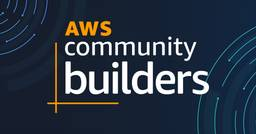

DENET 技術ブログ
https://blog.denet.co.jp/
Written by DENET engineers
フィード

AWS Community Builders 2024 に選出！活動の振り返りと感じたこと
DENET 技術ブログ
投稿 AWS Community Builders 2024 に選出！活動の振り返りと感じたこと は DENET 技術ブログ に最初に表示されました。
6日前

(小ネタ)SquidでMackerelやC1WSを利用
DENET 技術ブログ
投稿 (小ネタ)SquidでMackerelやC1WSを利用 は DENET 技術ブログ に最初に表示されました。
13日前
【AWS Comprehend】お堅い文章を読みやすくするサイト
DENET 技術ブログ
投稿 【AWS Comprehend】お堅い文章を読みやすくするサイト は DENET 技術ブログ に最初に表示されました。
15日前
【小ネタ集】AWS IoT SiteWiseのEdgeゲートウェイのバージョンアップと暗号化！！
DENET 技術ブログ
投稿 【小ネタ集】AWS IoT SiteWiseのEdgeゲートウェイのバージョンアップと暗号化！！ は DENET 技術ブログ に最初に表示されました。
1ヶ月前
AWS IoT SiteWiseでデータの連携時にLambdaを実行！！
DENET 技術ブログ
投稿 AWS IoT SiteWiseでデータの連携時にLambdaを実行！！ は DENET 技術ブログ に最初に表示されました。
1ヶ月前
AWS IoT SiteWise Monitorのダッシュボードでアラームを可視化！！（後）
DENET 技術ブログ
投稿 AWS IoT SiteWise Monitorのダッシュボードでアラームを可視化！！（後） は DENET 技術ブログ に最初に表示されました。
2ヶ月前
AWS IoT SiteWise Monitorのダッシュボードでアラームを可視化！！（前）
DENET 技術ブログ
投稿 AWS IoT SiteWise Monitorのダッシュボードでアラームを可視化！！（前） は DENET 技術ブログ に最初に表示されました。
2ヶ月前